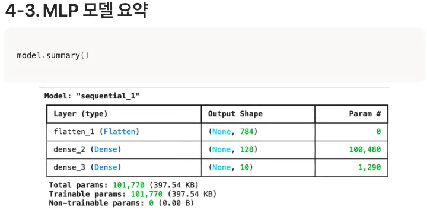
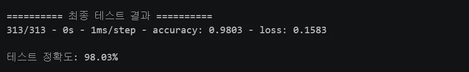
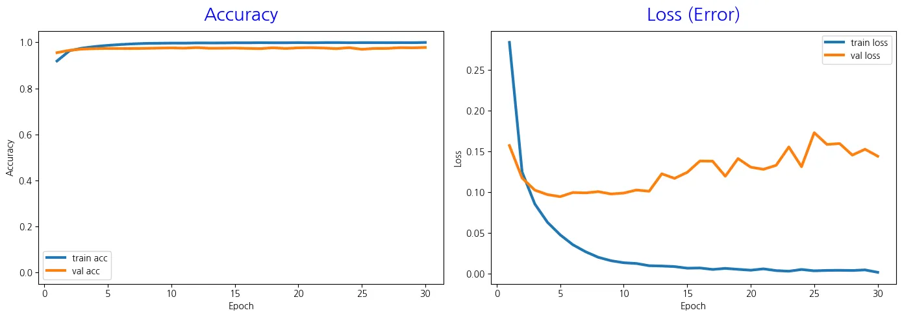

모델이 숫자의 모양을 배우는 문제입니다.
Part 1 · MLP Practice
MNIST를 MLP로
28×28 손글씨 숫자를 784개의 값으로 펼치고, MLP가 0부터 9까지의 정답을 고르는 전 과정을 실제 노트북 코드로 따라갑니다.
MNIST · S36–37
6만 장으로 배우고, 1만 장으로 시험한다
MNIST는 미국의 고등학생과 인구조사국 직원이 쓴 숫자를 모은 데이터셋입니다. 이미지 한 장은 28×28 흑백 픽셀이고, 각 픽셀은 0부터 255 사이의 값입니다.
학습이 끝난 모델의 실제 성능을 확인합니다.
784개의 픽셀값으로 이루어진 흑백 이미지입니다.
0은 검은색 배경, 255는 흰색 배경을 나타냅니다.
Code 01 / 09
모듈 불러오기
노트북 코드 원문 · 학습과 그래프 작성에 필요한 모듈을 불러옵니다.
Notebook markdown
os, random은 환경변수와 파이썬 난수를 다룹니다.numpy는 28×28 행렬의 수치 계산,tensorflow는 모델 정의·학습·평가를 맡습니다.koreanize_matplotlib과matplotlib.pyplot은 한글이 포함된 정확도·손실 그래프를 그립니다.
Code 02 / 09
랜덤 시드 고정
노트북 코드 원문 · 파이썬, NumPy, TensorFlow의 무작위성을 함께 고정합니다.
Notebook markdown
신경망의 가중치는 무작위로 초기화되므로 같은 코드를 실행해도 결과가 조금씩 달라질 수 있습니다. 네 군데의 시드를 모두 고정해야 무작위성이 새어 나가지 않고 결과를 재현할 수 있습니다.
Code 03 / 09
데이터 불러오기
노트북 코드 원문 · TensorFlow에 내장된 MNIST를 학습용과 테스트용으로 나눠 받습니다.
Notebook markdown
x_train은 60,000장의 이미지, y_train은 그 정답입니다. 테스트용은 10,000장입니다. 정답은 원-핫 벡터가 아니라 0~9의 정수이므로 뒤에서 sparse_categorical_crossentropy를 사용합니다.
Code 04 / 09
0~255를 0~1로 정규화
노트북 코드 원문 · 모든 픽셀값을 255로 나눕니다.
Notebook markdown
입력값의 범위를 줄이면 큰 값 때문에 학습이 불안정해지는 일을 막고, 경사하강법이 골짜기를 지나치지 않으며, 가중치가 한쪽 입력에 쏠리지 않도록 돕습니다.
Code 05 / 09 · Steps
Input에서 Softmax까지 층을 쌓는다
코드 전문은 그대로 두고 단계 버튼이나 방향키로 현재 층의 역할만 차례로 확인합니다.
첫 단계에서 Input → Flatten → Dense(128, relu) → Dense(10, softmax)를 따라갑니다.
Notebook markdown
Sequential은 층을 순서대로 쌓는 구조입니다. MLP는 2차원 이미지를 직접 받을 수 없어 Flatten으로 784개 값으로 펼치고, 128개 은닉 뉴런을 지난 뒤 10개 출력 뉴런에서 숫자별 확률을 만듭니다.
Code 06 / 09
학습 방법을 컴파일한다
노트북 코드 원문 · Adam, 정수 레이블용 손실함수, 정확도를 지정합니다.
Notebook markdown
adam은 보폭을 자동 조절하고 관성을 활용하는 최적화 도구입니다.sparse_categorical_crossentropy는 정답이 원-핫 인코딩되지 않은 정수인 분류 문제에 사용합니다.accuracy는 학습 중 사람이 직관적으로 확인할 정확도입니다.
Code 07 / 09 · Parameters · S49
작은 이미지인데 연결선이 10만 개
Dense 층의 파라미터는 입력마다 모든 출력 뉴런으로 이어지는 가중치와 출력 뉴런마다 하나씩 있는 편향을 더해 계산합니다.
노트북 코드 원문 · 설계한 각 층의 출력 모양과 파라미터 수를 표로 확인합니다.
Notebook markdown
Dense 층의 파라미터는 입력 뉴런 수 × 출력 뉴런 수 + 편향으로 계산합니다. None은 아직 정하지 않은 가변 배치 크기 자리입니다.
Dense(128)784 × 128 + 128 =100,480
Dense(10)128 × 10 + 10 =1,290
전체100,480 + 1,290 =101,770

4K 이미지라면 입력은 3,840×2,160 = 8,294,400개이고, 첫 Dense(128)만 1,061,683,328개의 파라미터가 필요합니다. 컬러 이미지라면 입력 채널까지 더 늘어납니다.
Code 08 / 09
30 epoch 학습
노트북 코드 원문 · 학습 데이터의 20%를 검증용으로 떼고 30번 반복합니다.
Notebook markdown
60,000장 중 48,000장은 학습, 12,000장은 검증에 사용됩니다. 기본 배치 크기 32이므로 실제 코드는 한 epoch에 1,500번, 30 epoch 동안 45,000번 가중치를 업데이트합니다. 모든 학습 기록은 history.history에 저장됩니다.
S50의 단순 계산: 슬라이드는 검증 분할 전 60,000장을 모두 세어 60,000 ÷ 32 = 1,875번, 30 epoch에서 56,250번으로 설명합니다. 실제 노트북 코드는 validation_split = 0.2가 있으므로 위의 45,000번 계산을 따릅니다.
Code 09 / 09
테스트하고 학습 곡선을 그린다
노트북 코드 원문 · 최종 테스트, Accuracy/Loss 그래프, epoch별 표와 최저 val_loss를 확인합니다.
Notebook markdown
테스트 데이터는 학습 중 한 번도 보지 않은 10,000장입니다. Validation은 학습 중 상태 확인과 조정에 쓰이지만 Test는 학습을 모두 마친 뒤 실제 성능을 재는 시험입니다. 그래프의 왼쪽은 train·validation 정확도, 오른쪽은 두 손실을 비교합니다.
Result · S51–53
98.03%, 그러나 5 epoch 부근부터 과적합
테스트 정확도만 보면 높지만, 학습 곡선을 함께 보면 훈련 데이터와 검증 데이터의 움직임이 갈라지는 시점을 읽을 수 있습니다.


Widget ⑥ · Placeholder
해상도가 커지면 MLP 연결은 얼마나 늘어날까?
Quick Check
코드와 그래프 확인
Flatten()이 하는 일은 무엇일까요?
답을 고르면 바로 해설이 나타납니다.
과적합이 시작되었다고 판단할 수 있는 신호는 무엇일까요?
답을 고르면 바로 해설이 나타납니다.